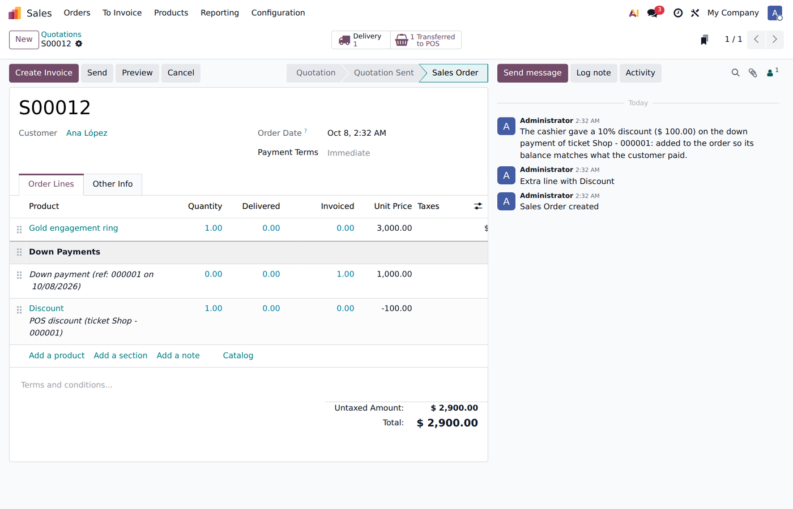

A customer pays part of a sale order at the Point of Sale (a down payment) and the cashier gives a 10 % discount on that line. The customer pays 900 instead of 1,000.
Odoo only lowers what the ticket charges. The sale order keeps its full price, so it shows a balance of 100 that the customer never owed — on the order, in the POS list of orders to settle, on invoices and in any reminder you send.
When the ticket is synced, the module gives the sale order the same discount: a POS discount (ticket …) line made with Odoo's own Sales discount tool (fixed amount, taxes included), plus a note in the chatter that says who, how much and on which ticket.
The balance of the order is right the moment the customer pays. Nothing to configure.

The order now totals 2,900: 900 paid at the POS, a balance of 2,000.
Odoo 19 · Point of Sale + Sales (pos_sale) · Community or Enterprise · no configuration.
Questions or a change you need? Write to soporte@xubax.com — XUBAX.